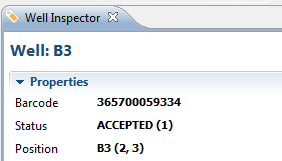
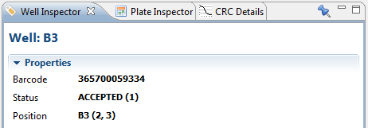

Phaedra contains numerous Views. A view is a visual component, also called a part. Each view usually has one specific purpose. For example, the Well Inspector view gives you detailed information about the well that is currently selected. The Well Image View displays the image for the currently selected well.

A view has a title bar, which can be used to drag the view to a new position: click on the title bar, hold the mouse button, and drag the view to the desired location. A dotted outline will show you where the view will be placed. To close a view, click the white cross icon next to the view title.
Most views can also be resized, minimized, or maximized. Right-click on a view title to access these options. Views can also be stacked behind each other to save space:

For more information on using the Phaedra workbench, refer to the Getting Started: Workbench topic.